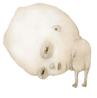

ABOUT
Elly Goan is a fourth year undergraduate Statistics and Data Science major and Information and Media Literacy minor student at the University of California, Los Angeles. Elly at UCLA works as a data analyst for the Central Ticket Office to help analyze ticket sales and donations. Additionally, Elly is a supervisor for UCLA Rec in their compeitive sports department. Outside of academics and work Elly is involved in the Den with UCLA Athletics to help promote attendance and school spirit for sports team and helps tutor low income families where she is the Assistant lead of the club Cub Support Tutoring.